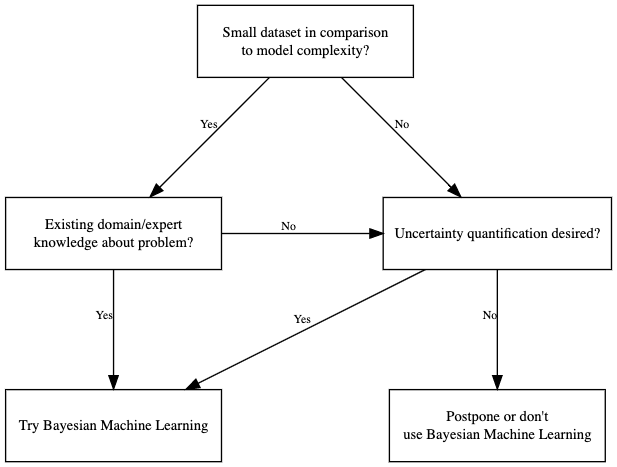
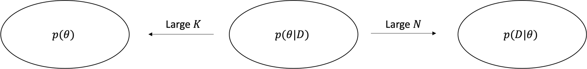
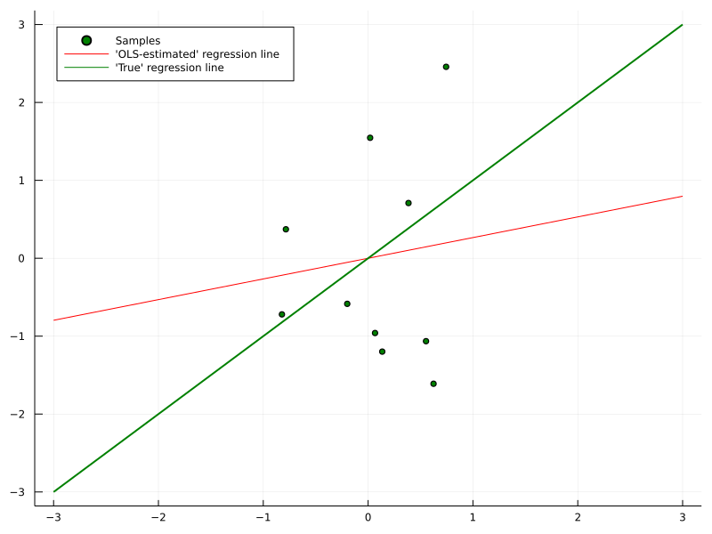
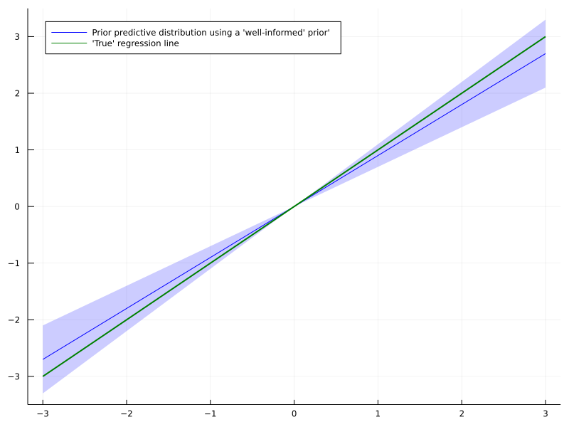
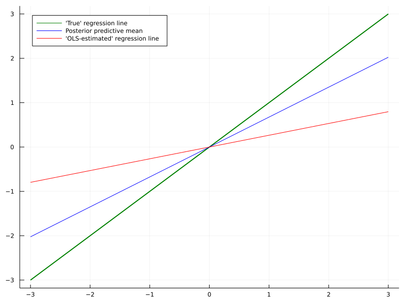
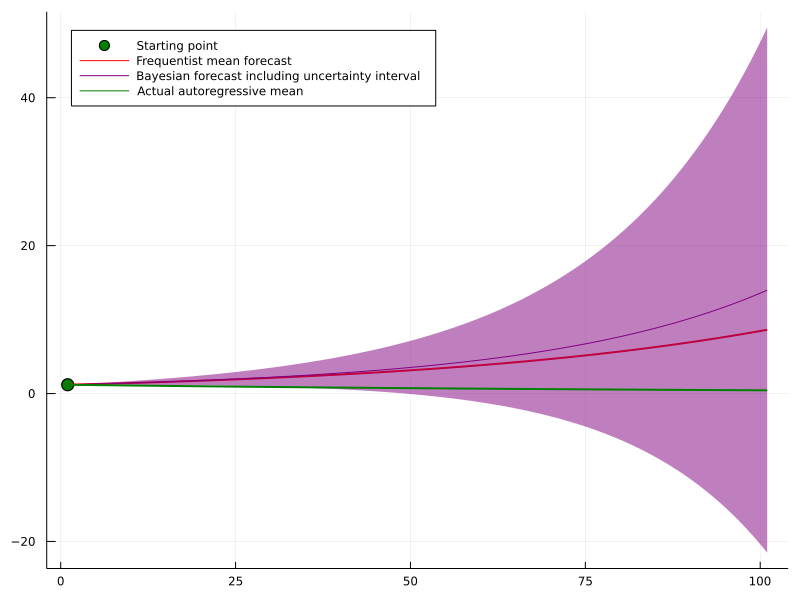

Introduction
When it comes to Bayesian Machine Learning, you likely either love it or prefer to stay at a safe distance from anything Bayesian. Given that current state-of-the-art models hardly ever mention Bayes at all, there is probably at least some rationale behind the latter.
On the other hand, many high profile research groups are have been working on Bayesian Machine Learning tools for decades. And they still do.
Thus, it is rather unlikely that this field is complete quackery either. As often in life, the truth lies probably somewhere between the two extremes. In this article, I want to share my view on the titled question and point out when Bayesian Machine Learning can be helpful.
To avoid confusion, let us briefly define what Bayesian Machine Learning means in the context of this article:
“The Bayesian framework for machine learning states that you start out by enumerating all reasonable models of the data and assigning your prior belief P(M) to each of these models. Then, upon observing the data D, you evaluate how probable the data was under each of these models to compute P(D|M).” - Zoubin Ghahramani
Less formally, we apply tools and frameworks from Bayesian statistics to Machine Learning models. I will provide some references at the end, in case you are not familiar with Bayesian statistics yet.
Also, our discussion will essentially equate Machine Learning with neural networks and differentiable models in general (particularly Linear Regression). Since Deep Learning is currently the cornerstone of modern Machine Learning, this appears to be a fair approach.
As a final disclaimer, we will differentiate between frequentist and Bayesian Machine Learning. The former includes the standard ML methods and loss functions that you are probably already familiar with.
Finally, the fact that ‘Bayesian’ is written in uppercase but ‘frequentist’ is not has no judgemental meaning.
Now, let us begin with a surprising result:
Your frequentist model is probably already Bayesian
This statement might sound surprising and odd. However, there is a neat connection between the Bayesian and frequentist learning paradigm.
Let’s start with Bayes’ formula \[ \begin{align} p(\theta \mid D)=\frac{p(D \mid \theta) p(\theta)}{p(D)}\label{eq1}\tag{1} \end{align} \] and apply it to a Bayesian Neural Network: \[ \begin{align} &\theta: \text{Network weights}\\ &D : \text{Dataset}\\ &p(\theta) : \text{Prior distribution over network weights}\\ &p(D \mid \theta) : \text{Likelihood function}\\ \end{align} \] As an illustrative example, we could have \[ p(D \mid \theta)=\prod_{i=1}^N \mathcal{N}\left(y_i \mid f_\theta\left(X_i\right), \sigma^2\right)\tag{2}\label{2} \] i.e. the network output defines the mean of the target variable which, presumably, follows a Normal distribution. For the prior over the network weights - let’s presume we have K weights in total - we might choose \[ p(\theta) \sim \prod_{k=1}^K \mathcal{N}\left(\theta_k \mid 0, \eta^2\right) \tag{3}\label{3} \] The setup with (\(\ref{2}\)) and (\(\ref{3}\)) is fairly standard for Bayesian Neural Networks. Finding a posterior weight distribution for (\(\ref{1}\)) turns out to be futile in any reasonable setting for Bayesian Networks. This is nothing new for Bayesian models either.
We now have a few options to deal with this issue, e.g. MCMC, Variational Bayes or Maximum a-posteriori estimation (MAP). Technically, the latter only gives us a point estimate for the posterior maximum, not the full posterior distribution: \[ \begin{aligned} & \theta^{M A P}=\operatorname{argmax}_\theta p(\theta \mid D) \\ = & \operatorname{argmax}_\theta \frac{p(D \mid \theta) p(\theta)}{p(D)} \end{aligned} \] Given that a probability density is strictly positive over its domain, we can introduce logarithms: \[ \begin{aligned} & \theta^{\text {MAP }}=\operatorname{argmax}_\theta \log p(\theta \mid D) \\ = & \operatorname{argmax}_\theta[\log p(D \mid \theta)+\log p(\theta)-\log p(D)] \\ = & \operatorname{argmax}_\theta[\log p(D \mid \theta)+\log p(\theta)] \end{aligned}\label{4}\tag{4} \] Since the last summand does not depend on the model parameters, it does not affect the argmax. Hence, we can leave it out.
From Bayesian MAP to regularized MSE
The purpose of equations (\(\ref{2}\)) and (\(\ref{3}\)) was only an illustrative one. Let us replace likelihood and prior with the following: \[ \begin{gather} p(D \mid \theta)=\prod_{i=1}^N \frac{1}{Z_1} e^{-\left(f_\theta\left(x_i\right)-y_i\right)^2}\label{5}\tag{5} \\ p(\theta)=\prod_{k=1}^K \frac{1}{Z_2} e^{-\left(\frac{\theta_k}{\lambda}\right)^2}, \lambda>0\label{6}\tag{6} \end{gather} \] The Z-terms are normalization constants whose sole purpose is to yield valid probability densities.
Now we can plug (\(\ref{5}\)) and (\(\ref{6}\)) into (\(\ref{4}\)): \[ \begin{aligned} \theta^{\text {MAP }}&=\operatorname{argmax}_\theta\left[\log \prod_{i=1}^N \frac{1}{Z_1} e^{-\left(f_\theta\left(x_i\right)-y_i\right)^2}+\log \prod_{k=1}^K \frac{1}{Z_2} e^{-\left(\frac{\theta_k}{\lambda}\right)^2}\right] \\ &= \operatorname{argmax}_\theta\left[\sum_{i=1}^N \log \frac{1}{Z_1} e^{-\left(f_\theta\left(x_i\right)-y_i\right)^2}+\sum_{k=1}^K \log \frac{1}{Z_2} e^{-\left(\frac{\theta_k}{\lambda}\right)^2}\right] \\ &= \operatorname{argmax}_\theta\left[-N \log Z_1-\sum_{i=1}^N\left(f_\theta\left(x_i\right)-y_i\right)^2-K \log Z_2-\sum_{k=1}^K\left(\frac{\theta_k}{\lambda}\right)^2\right] \\ &= \operatorname{argmax}_\theta\left[-\sum_{i=1}^N\left(f_\theta\left(x_i\right)-y_i\right)^2-\frac{1}{\lambda^2} \sum_{k=1}^K \theta_k^2\right] \end{aligned} \] As the maximum of a function is equal to the minimum of the negative function, we can write \[ \begin{aligned} \theta^{\text {MAP }}&=\operatorname{argmin}_\theta\left[\sum_{i=1}^N\left(f_\theta\left(x_i\right)-y_i\right)^2+\frac{1}{\lambda^2}\|\theta\|_2^2\right] \\ &= \operatorname{argmin}_\theta\left[\frac{1}{N} \sum_{i=1}^N\left(f_\theta\left(x_i\right)-y_i\right)^2+\frac{1}{N \lambda^2}\|\theta\|_2^2\right] \\ &= \operatorname{argmin}_\theta M S E\left(f_\theta(X), y\right)+\tilde{\lambda}\|\theta\|_2^2 \end{aligned} \] The final term is nothing more than the standard MSE-objective with regularization. Hence, a regularized MSE objective is equivalent to a Bayesian MAP objective, given specific prior and likelihood.
If you reverse the above, you can find a prior-likelihood pair for almost any frequentist loss function. However, the frequentist objective typically only point you a point solution.
The Bayesian method, on the other hand, gives you a full posterior distribution with uncertainty intervals on top. Using uninformative prior distributions you can also remove the regularization term if necessary. We won’t cover a derivation here, however.
The price of Bayesian Machine Learning in the real world
So, in theory, Bayesian Machine Learning yields a more complete picture than the frequentist approach. The caveat however is the intractability of the posterior distribution and thus the need to approximate or estimate it.
Both approximation and estimation, however, inevitably lead to a loss in precision. Take for example the popular variational inference approach for Bayesian Neural Networks. In order to optimize the model, we need to approximate a so-called ELBO-objective by sampling from the variational distribution.
The usual ELBO-objective looks like this - don’t worry if you don’t understand everything: \[ \begin{equation} ELBO=\mathbb{E}_{q(\theta)}[p(D \mid \theta)]+K L(q(\theta) \| p(\theta)) \label{7}\tag{7} \end{equation} \] Our goal is to either maximize (\(\ref{7}\)) or minimize its negative. However, the expectation term is typically not intractable. The easiest solution to this issue is the application of the reparameterization trick. This allows us to estimate the ELBO via \[ \nabla_\theta E \hat{L B O}=\frac{1}{M} \sum_{m=1}^M \nabla_\theta p\left(D \mid g_\theta\left(\epsilon_m\right)\right)+\nabla_\theta K L(q(\theta) \| p(\theta)) \] The linearity of the gradient operation then allows us to estimate the gradient of (\(\ref{7}\)) via: \[ E \hat{L B O}=\frac{1}{M} \sum_{m=1}^M p\left(D \mid g_\theta\left(\epsilon_m\right)\right)+K L(q(\theta) \| p(\theta)) \label{8}\tag{8} \] With this formula, we are basically sampling M gradients from a reparametrized distribution. Thereafter, we use those samples to calculate an ‘average’ gradient.
Unbiased gradient estimation for the ELBO
As demonstrated in the landmark paper by Kingma and Welling (2013), we have \[ \mathbb{E}\left[\nabla_\theta \hat{ELBO}\right]=\nabla_\theta E L B O \label{9}\tag{9} \] In essence, equation (\(\ref{9}\)) tells us that our sampling based gradient is, on average, equal to the true gradient. The problem with (\(\ref{9}\)) is that we don’t know anything about the higher order statistical moments of sampled gradient.
For example, our estimate might have a prohibitively large variance. Thus, while we gradient descend in the correct direction on average, we are doing so unreasonably inefficiently.
The additional randomness due to resampling also makes it difficult to find the right stopping time for gradient descent. Add that to the problem of non-convex loss-functions and your chances of underperforming against a non-Bayesian network are fairly high.
In summary, the true posterior in a Bayesian world could give us a more complete picture about the optimal parameters. Since we need to resort to approximation however, we most likely end up with worse performance than with the standard approach.
When does Bayesian Machine Learning actually make sense?
The above considerations beg the question of whether you want to even use Bayesian Machine Learning at all. Personally, I see two particular situations where this could be the case. Keep in mind, that what follows are rules of thumb. The actual decision for or against Bayesian Machine Learning should be based on the specific problem at hand.

Small datasets and informative prior knowledge
Let us move back to the regularized MSE derivation from before. Our objective was \[ \operatorname{argmax}_\theta\left[\sum_{i=1}^N \log \frac{1}{Z_1} e^{-\left(f_\theta\left(x_i\right)-y_i\right)^2}+\sum_{k=1}^K \log \frac{1}{Z_2} e^{-\left(\frac{\theta_k}{\lambda}\right)^2}\right] \] There is a clear tradeoff between the size of the dataset, \(N\), and the amount of model parameters, \(K\). For sufficiently large datasets, the prior on the right side becomes irrelevant for the MAP solution and vice-versa. This is also a key property for posterior inference in general.

When the dataset is small in relation to the amount of model parameters, the posterior distribution will closely resemble the prior. Thus, if the prior distribution contains sensible information about the problem, we can mitigate the lack of data to some extent.
Take for example a plain linear regression model. Depending on the signal-to-noise ratio, a lot of data might be necessary before the parameters converge to the ‘best’ value. If you have a well reasoned prior distribution about that ‘best’ solution, your model might actually converge faster.



As a result, convergence to the ‘best’ solution could be even slower than without any prior at all. There are more tools in Bayesian statistics to mitigate this reasonable objection and I am keen to cover this topic in a future article.
Also, even if you don’t want to go fully Bayesian, a MAP estimate could still be useful given high-quality prior knowledge.
Functional priors for modern Bayesian Machine Learning
A different issue might be the difficulty of expressing meaningful prior knowledge over neural network weights. If the model is a black-box, how could you actually tell it what to do? Apart from maybe some vague zero-mean Normal distribution over weights?
One promising direction to solve this issue could be functional Bayes. In that approach, we only tell the network what outputs we expect for given inputs, based on our prior knowledge. Hence, we only care about the posterior functions that our model can express. The exact parameter posterior distribution is only of secondary interest.
In short, if you have only limited data but well-informed prior knowledge, Bayesian Machine Learning could actually help.
Importance of uncertainty quantification
For large datasets, the effect of your prior knowledge becomes less and less relevant. In that case, obtaining a frequentist solution might be fully sufficient and the superior approach. At some occasions however, the full picture - a.k.a. posterior uncertainty - could be important.
Consider the case of making a medical decision based on some Machine Learning model. In addition, the model does not produce a final decision but rather supports doctors in their judgement. If Bayesian point accuracy is at least close to a frequentist equivalent, uncertainty output can serve as useful extra information.
Presuming that the expert’s time is limited, they might want to take a closer look at highly uncertain model output. For output with low uncertainty, a quick sanity check might suffice. This of course requires the uncertainty estimates to be valid in the first place.
Hence, the Bayesian approach comes at the additional cost of monitoring uncertainty performance as well. This should of course be taken into account when deciding whether to use a Bayesian model or not.
Another example where Bayesian uncertainty can shine are time-series forecasting problems. If you model a time series in an autoregressive manner, i.e. you estimate \[ p\left(y_{t+1} \mid y_t, \ldots, y_{t-j}\right) \] your model errors accumulate, the further ahead you are trying to forecast.
Even for a highly simple autoregressive time-series such as \[ y_{t+1}=0.99 \cdot y_t+\epsilon, \quad \epsilon \sim \mathcal{N}(0,1) \] a minuscule deviation in your estimated model \[ \hat{\mathbb{E}}\left[y_{t+1} \mid y_t\right]=1.02 \cdot y_t \] can lead to catastrophic error accumulation in the long run: \[ \begin{aligned} & \left(\mathbb{E}\left[y_{t+T} \mid y_t\right]-\hat{\mathbb{E}}\left[y_{t+T} \mid y_t\right]\right)^2 \\ = & \left(0.99^T \cdot y_t-1.02^T \cdot y_t\right)^2 \\ \rightarrow & 1.02^{2 T} y^2 \end{aligned} \] A full posterior could give a much clearer picture of how other, similarly probable scenarios might play out. Even though the model might be wrong on average, we nevertheless get an idea of how different parameter estimates affect the forecast.

Finally, if the last paragraph has made you interested in trying out Bayesian Machine Learning, here is a great method to start with:
Bayesian Deep Learning light with MC dropout
Luckily, it is nowadays not too costly to train a Bayesian model. Unless you are working with very big models, the increased computational demand of Bayesian inference should not be too problematic.
One particularly straightforward approach to Bayesian inference is MC dropout. The latter was introduced by Gal and Ghahramani and has since become a fairly popular tool. In summary, the authors show that it is sensible to use Dropout during both training and inference of a model. In fact, this is proved to be equivalent to variational inference with a particular, Bernoulli-based, variational distribution.
Hence, MC Dropout can be a great starting point to make your Neural Network Bayes-ish without requiring too much effort upfront.
Pros and cons
On the one hand, MC dropout makes it quite straightforward to make an existing model Bayesian. You can simply re-train it with dropout and leave dropout turned on during inference. The samples you create that way can be seen as draws from the Bayesian posterior predictive distribution.
On the other hand, the variational distribution in MC dropout is based on Bernoulli random variables. This should - in theory - make it an even less accurate approximation than the common Gaussian variational distribution. However, building and using a this model is quite simple, requiring only plain Tensorflow or Pytorch.
Also, there has been some deeper criticism about the validity of the approach. There exists an interesting debate involving one of the authors here.
Whatever you make out of that criticism, MC Dropout can be a helpful baseline for more sophisticated methods. Once you get a hang of Bayesian Machine Learning, you can try to improve performance with more sophisticated model from there.
Conclusion
I hope that this article has given you some insights on the usefulness of Bayesian Machine Learning. Certainly, it is no magic bullet and there are many occasions where it might not be the right choice. If you carefully weigh in the pros and cons though, Bayesian methods can be a highly useful tool.
Also, I am happy to have a deeper discussion on the topic, either in the comments or via private channels.
References
[1] Gelman, Andrew, et al. “Bayesian data analysis”. CRC press, 2013.
[2] Kruschke, John. “Doing Bayesian data analysis: A tutorial with R, JAGS, and Stan.” Academic Press, 2014.
[3] Sivia, Devinderjit, and John Skilling. “Data analysis: a Bayesian tutorial.” OUP Oxford, 2006.